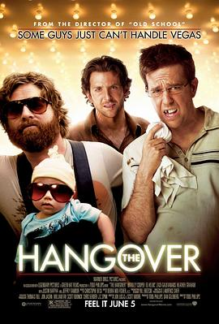

宿醉 / The Hangover
又名：醉后大丈夫(台) / 醉爆伴郎团(港) / 醉醒时分
作品信息
| 导演 | 托德·菲利普斯 |
| 编剧 | 乔恩·卢卡斯 / 斯科特·摩尔 |
| 主演 | 布莱德利·库珀 / 艾德·赫尔姆斯 / 扎克·加利凡纳基斯 / 贾斯汀·巴萨 / 海瑟·格拉汉姆 / 萨莎·巴瑞斯 / 杰弗里·塔伯 / 郑肯 / 迈克·泰森 |
| 类型 | 喜剧 |
| 制片国家/地区 | 美国 |
| 语言 | 英语 |
| 上映日期 | 2009-06-05(美国) |
| 片长 | 108分钟 |
| IMDb | tt1119646 |
最后一次看到是 2026-08-12T21:13:25+08:00 · 豆瓣原页